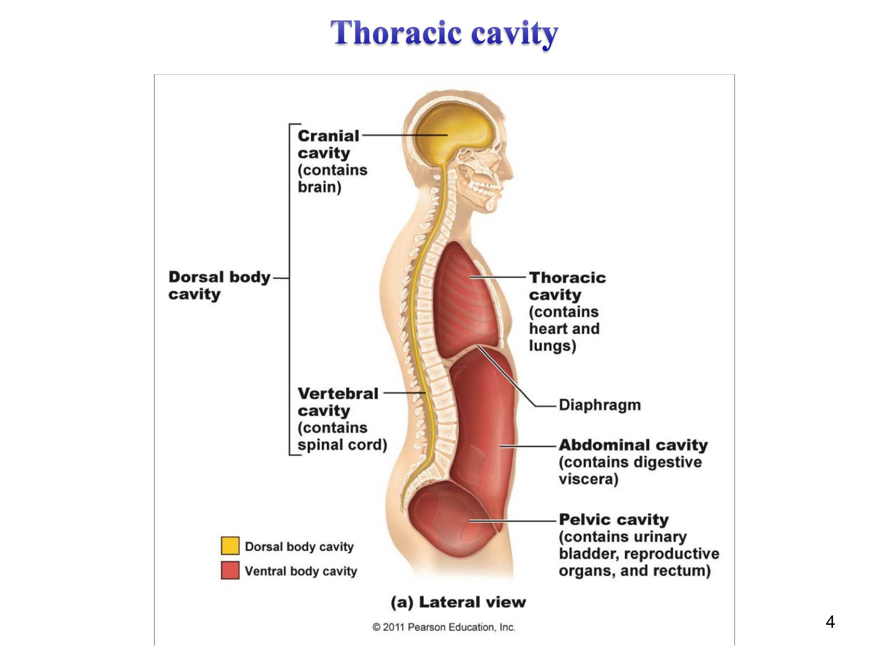
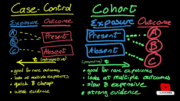
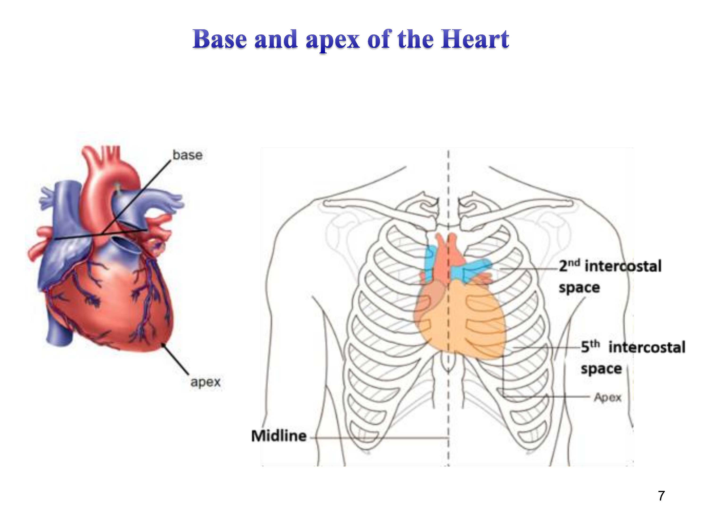
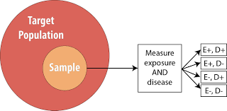
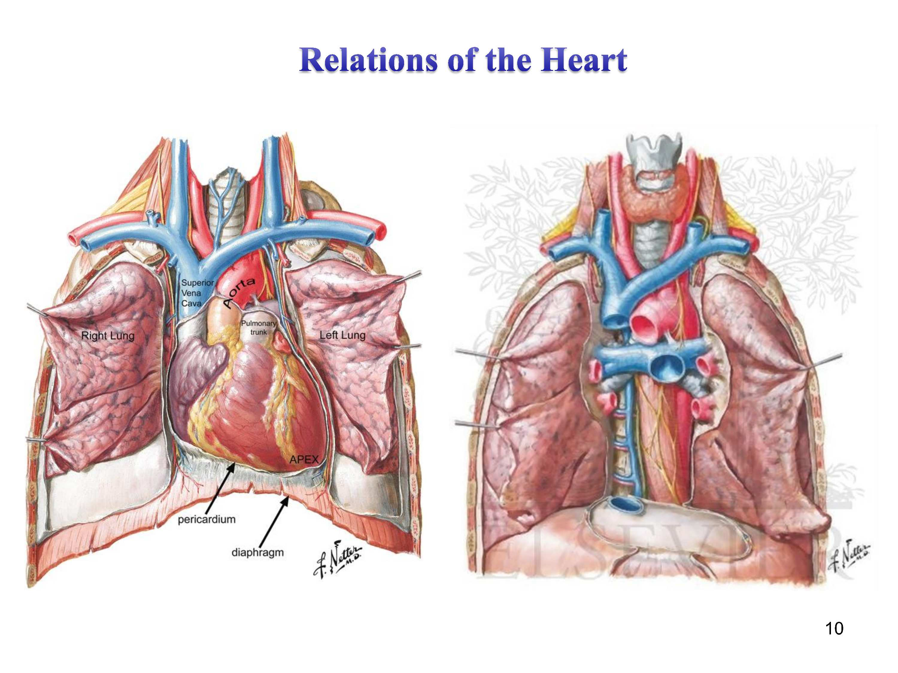
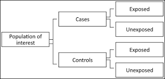
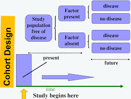
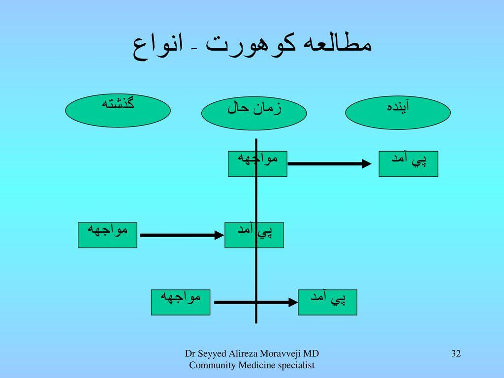
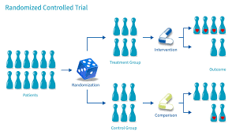
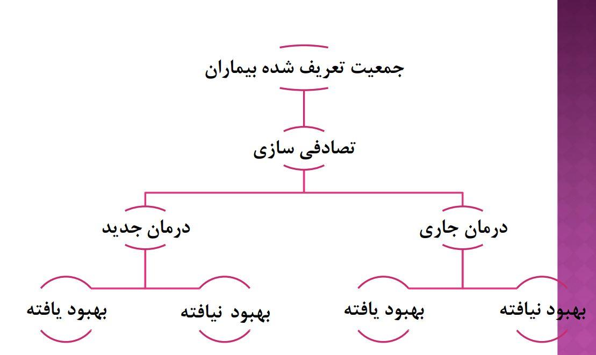

شبنم رضاپور
کسی که PDFها را راضی کرد محتوایشان را بیکموکاست لو بدهند.
این جزوه با استفاده از هوش مصنوعی تولید شده است. ممکن است شامل خطا یا برداشت نادرست باشد و نیازمند بررسی و بازبینی مجدد است.
این جلسه به تفاوت پزشکی (Medicine) با پزشکی اجتماعی و سلامت عمومی (Public Health)، بیماریهای مرتبط با محیط زیست، پوست و شغل، و سپس مبانی اپیدمیولوژی و انواع مطالعات اپیدمیولوژیک اختصاص دارد. مدرس درس: Maryam Karimi Jaberi، PhD student in Epidemiology.
مباحث مطرحشده در این جلسه:
تعریف — پزشکی (Medicine) تمرکز اصلی پزشکی بر درمان بیماران در سطح فردی است و طب داخلی نمونهای از آن به شمار میرود. علوم بالینی، مطالعه سلامت و بیماری هستند.
تعریف — پزشکی اجتماعی و سلامت عمومی (Public Health) تمرکز اصلی این حوزه بر جامعه است و ارزیابی سلامت کل جامعه و معاینه افراد سالم — از جمله افرادی که برای کشف زودهنگام بیماری در جستجوی مراقبت پزشکی مراجعه میکنند — را در بر میگیرد. این حوزه نیازمند روشها و علوم خاصی مانند بیوشیمی، فیزیولوژی و اپیدمیولوژی است.
پزشکی اجتماعی در ردیابی خطر بیماری سل (Tuberculosis) کاربرد دارد. ابزارهای تشخیصی این بیماری تست PPD و رادیوگرافی قفسه سینه هستند و واکسن ضد سل BCG از جمله اقدامات پیشگیرانه در سطح جامعه به شمار میرود. غربالگری و آزمایشهای تشخیصی در سطح جمعیتی از ضروریات پزشکی اجتماعی محسوب میشوند.
نکته مهم: در شرایط بلایای طبیعی مانند سیل و زلزله که آب و غذای آلوده و شرایط بهداشتی نامناسب وجود دارد، موارد ابتلا به این بیماریها افزایش مییابد.
تغییرات پوستی از جمله علائمی هستند که میتوانند نشانه بیماریهای مختلف باشند. در ارتباط با بیماریهای پوستی:
تعریف — درماتیت (Dermatitis) التهاب پوست است که میتواند بهصورت قرمزی، خارش و التهاب ظاهر شود.
سه علامت مهم که در ارتباط با بیماریهای مختلف ظاهر میشوند:
این سه علامت با هم در برخی بیماریهای خاص مانند پلاگر (Pellagra) دیده میشوند.
در شرایط شغلی خاص، پوست در معرض انواع مختلفی از عوامل آسیبرسان قرار میگیرد:
⚠ جایگاه Hepatitis A یا E در بیماریهای شغلی پوستی وضعیت: در اسلاید، هپاتیت A یا E در فهرست خطرات پوستی مشاغل آمده است؛ نسبت مستقیم این بیماری ویروسی با پوست (احتمالاً از مسیر تظاهرات پوستی) در درس بهصورت صریح توضیح داده نشد و نیازمند تطبیق با اسلاید اصلی است.
⚠ نگارش CCI4 (کربن تتراکلرید) وضعیت: در محتوای درس صورت «CCI4» درج شده است؛ نگارش استاندارد این ماده «CCl4» است و تطبیق نگارش با اسلاید اصلی نیازمند بررسی است.
افزایش خطر: در مشاغلی که با مواد سرطانزا در تماس هستند، خطر ابتلا به سرطان و لوسمی افزایش مییابد؛ این افزایش خطر در کارکنانی که سالها در معرض مواد شیمیایی خاص قرار دارند مشاهده شده است.
سیاه زخم پوستی (Cutaneous Anthrax): عامل این بیماری باکتری باسیلوس آنتراسیس است و راه سرایت آن، تماس پوست با حیوانات آلوده یا محصولات حیوانی آلوده است. این بیماری در دامداران و افرادی که با پوست و چرم حیوانات کار میکنند شایعتر است.
اپیدمیولوژی (Epidemiology) از سه بخش تشکیل شده است:
تعریف — اپیدمیولوژی (Epidemiology) مطالعه آنچه بر مردم واقع میشود؛ یعنی مطالعه بیماری و سلامت در جمعیت.
مقایسه بار بیماری بین دو دوره زمانی از کاربردهای مهم اپیدمیولوژی و پزشکی اجتماعی است. این مقایسه شامل بررسی میزان شیوع بیماری در دورههای مختلف است و نشان میدهد که آیا با گذشت زمان، بار یک بیماری در جامعه افزایش یا کاهش یافته است.
جان اسنو (John Snow) پدر اپیدمیولوژی مدرن محسوب میشود. او در سال 1854 میلادی، بیماری وبا (Cholera) را در لندن مطالعه کرد.
جان اسنو بررسی کرد که ساکنان لندن آب خود را از دو شرکت آب دریافت میکردند: شرکت Southwark & Vauxhall آب را از بالادست رودخانه توزیع میکرد و شرکت Lambeth آب را از پاییندست رودخانه میگرفت؛ درحالیکه توزیع این دو شرکت آب در منطقه یکسان بود.
اسنو دریافت که میزان مرگومیر ناشی از وبا در خانههایی که از شرکت Southwark & Vauxhall آب دریافت میکردند، بسیار بیشتر از خانههایی بود که آب خود را از شرکت Lambeth میگرفتند. بر این اساس، او به این نتیجه رسید که آب آلوده عامل بیماری وبا است.
جان اسنو نقشهای از محل وقوع موارد وبا تهیه کرد که به نقشه وبا (Cholera Map) معروف شد. این نقشه توزیع جغرافیایی موارد وبا در لندن را نشان میداد و او توانست با استفاده از آن، منبع بیماری را شناسایی کند.

تصویر ۴⚠ شماره اسلاید تصاویر وضعیت: شماره اسلاید متناظر با تصاویر جزوه (تصاویر ۴ تا ۱۵) از محتوای درس قابل تعیین نبود و نیازمند تطبیق با فایل اسلاید اصلی است.
نقشه وبای جان اسنو:
تصویر ۵
اسنو در نقشه خود، محل چاه آب عمومی خیابان برود (Broad Street) را مشخص کرد و دریافت که بیشتر موارد وبا در اطراف این چاه متمرکز شدهاند. با بستن این چاه، روند بیماری وبا کاهش یافت. این کار اولین مطالعه اپیدمیولوژیک مدرن محسوب میشود.

تصویر ۶انواع مطالعات اپیدمیولوژیک به دو دسته کلی تقسیم میشوند:
مطالعات مشاهدهای شامل دو زیرگروه است:
Population Based (مبتنی بر جمعیت):
Individual Based (مبتنی بر فرد):
Randomized (تصادفیسازیشده):
Non-randomized (غیرتصادفی):

تصویر ۷تعریف — گزارش مورد (Case Report) توصیف یک یا چند مورد بیماری است و ابتداییترین شکل مطالعه اپیدمیولوژیک محسوب میشود.
این نوع مطالعه زمانی به کار میرود که یک بیماری جدید یا غیرمعمول مشاهده شود و در آن، اطلاعات بالینی بیماران بهصورت توصیفی گزارش میشود. مهمترین محدودیت این نوع مطالعه، عدم وجود گروه شاهد است و به همین دلیل نمیتوان از آن نتیجهگیری علّی کرد.
تعریف — مطالعه مقطعی (Cross-sectional Study) نوعی مطالعه توصیفی-تحلیلی است که در آن مواجهه و بیماری بهطور همزمان در یک نقطه زمانی مشخص بررسی میشوند.
در این نوع مطالعه، نمونهای از جمعیت هدف (Target Population) انتخاب میشود و هم مواجهه (Exposure) و هم بیماری (Disease) بهطور همزمان اندازهگیری میشوند.

تصویر ۹نکته مهم: مطالعه مقطعی تنها میتواند شیوع (Prevalence) را اندازهگیری کند و قادر به تعیین بروز (Incidence) نیست.
مثال: بررسی شیوع دیابت نوع 2 و عوامل خطر آن در یک جامعه در زمان مشخص.

تصویر ۱۰تعریف — مطالعه مورد-شاهدی (Case-Control Study) نوعی مطالعه تحلیلی است که در آن شروع از پیامد (بیماری) است و به عقب نگاه میشود تا مواجهه بررسی شود.
در این نوع مطالعه:

تصویر ۱۱پس از انتخاب گروهها، میزان مواجهه (Exposed / Unexposed) در هر دو گروه مقایسه میشود.
مطالعه مورد-شاهدی برای بررسی بیماریهای نادر، بیماریهایی با دوره نهفتگی طولانی و بیماریهایی که نیاز به پیگیری طولانیمدت دارند مناسب است و معمولاً برای بررسی عوامل خطر متعدد بهطور همزمان استفاده میشود.
تعریف — مطالعه کوهورت (Cohort Study) نوعی مطالعه تحلیلی است که در آن افراد بر اساس مواجهه (Exposed / Unexposed) به دو گروه تقسیم میشوند و سپس به مدت زمان مشخص پیگیری میشوند تا بروز بیماری در دو گروه با هم مقایسه شود.

تصویر ۱۲
تصویر ۱۳مزایا:
معایب:

تصویر ۱۴در مطالعه آزمایشی (Experimental Study)، محقق بهطور فعال مداخله انجام میدهد و افراد بهطور تصادفی (Randomization) به دو گروه مداخله و کنترل (Control) تقسیم میشوند.

تصویر ۱۵در Randomized Controlled Trial، بیماران به دو گروه تصادفی تقسیم میشوند. این نوع مطالعه استاندارد طلایی (Gold Standard) در ارزیابی اثربخشی درمانها محسوب میشود. طرح کلی آن شامل مراحل زیر است:
تعریف — پزشکی (Medicine) درمان بیماران در سطح فردی؛ نمونه: طب داخلی.
تعریف — پزشکی اجتماعی و سلامت عمومی (Public Health) تمرکز بر جامعه؛ ارزیابی سلامت کل جامعه و معاینه افراد سالم برای کشف زودهنگام بیماری.
تعریف — درماتیت (Dermatitis) التهاب پوست با تظاهر قرمزی، خارش و التهاب.
تعریف — اپیدمیولوژی (Epidemiology) مطالعه آنچه بر مردم واقع میشود؛ یعنی مطالعه بیماری و سلامت در جمعیت.
تعریف — پنوموکونیوز (Pneumoconiosis) بیماری ناشی از استنشاق ذرات گرد و غبار معدنی در محیط کار.
تعریف — گزارش مورد (Case Report) توصیف یک یا چند مورد بیماری؛ ابتداییترین شکل مطالعه اپیدمیولوژیک.
تعریف — مطالعه مقطعی (Cross-sectional Study) بررسی همزمان مواجهه و بیماری در یک نقطه زمانی مشخص؛ تنها شیوع (Prevalence) را اندازهگیری میکند.
تعریف — مطالعه مورد-شاهدی (Case-Control Study) مطالعه تحلیلی با شروع از پیامد (بیماری) و نگاه به عقب برای بررسی مواجهه.
تعریف — مطالعه کوهورت (Cohort Study) گروهبندی افراد بر اساس مواجهه و پیگیری برای مقایسه بروز بیماری میان دو گروه.
تعریف — مطالعه آزمایشی (Experimental Study) مداخله فعال محقق و تقسیم تصادفی (Randomization) افراد به گروههای مداخله و کنترل.
نکته مهم امتحانی
- تمرکز پزشکی (Medicine) بر درمان بیماران در سطح فردی و تمرکز پزشکی اجتماعی و سلامت عمومی (Public Health) بر جامعه است.
- در مثال سل (Tuberculosis): ابزارهای تشخیصی = تست PPD و رادیوگرافی قفسه سینه؛ اقدام پیشگیرانه در سطح جامعه = واکسن ضد سل BCG.
- پزشکی اجتماعی نیازمند روشها و علوم خاصی مثل بیوشیمی، فیزیولوژی و اپیدمیولوژی است.
نکته مهم امتحانی
- نکته مهم (با تأکید مدرس): در شرایط بلایای طبیعی مثل سیل و زلزله که آب و غذای آلوده و شرایط بهداشتی نامناسب وجود دارد، موارد ابتلا به بیماریهای منتقله از آب و غذا (مثل Hepatitis E و Hepatitis A) افزایش مییابد.
- ناقل مالاریا (Malaria) پشه آنوفل (Anopheles) از جنس ماده است.
- ناقل هر دو بیماری تب دانگ (Dengue Fever) و تب زرد (Yellow Fever) پشه آئدس (Aedes) است.
- بروسلوز (Brucellosis) با نام تب مالت نیز شناخته میشود.
نکته مهم امتحانی
- سه علامت مهم (با عنوان «مهم» از سوی مدرس) در ارتباط با بیماریهای مختلف: Diarrhea (اسهال)، Dermatitis (درماتیت)، Dementia (زوال عقل).
- این سه علامت با هم در پلاگر (Pellagra) دیده میشوند.
- درماتیت (Dermatitis) = التهاب پوست با قرمزی، خارش و التهاب.
نکته مهم امتحانی
- پنوموکونیوز (Pneumoconiosis) ناشی از استنشاق ذرات گرد و غبار معدنی در محیط کار است و سه نوع آن را بهخاطر بسپارید: سیلیکوز (سیلیس)، آبستوز (آزبست)، بیسینوز (پنبه).
- CCI4 (کربن تتراکلرید) میتواند باعث آسیب کبدی و تغییرات پوستی شود.
- سیاه زخم پوستی (Cutaneous Anthrax): عامل = باکتری باسیلوس آنتراسیس؛ در دامداران و کارکنان پوست و چرم حیوانات شایعتر است.
- در مشاغل با تماس مواد سرطانزا، خطر ابتلا به سرطان و لوسمی افزایش مییابد.
نکته مهم امتحانی
- ریشهشناسی Epidemiology (که مدرس بخشبخش جدا کرد): Epi = بر/روی (upon/on)، Demos = مردم/جمعیت (people)، Logy = مطالعه (study).
- معنای نهایی: مطالعه آنچه بر مردم واقع میشود — یعنی مطالعه بیماری و سلامت در جمعیت.
نکته مهم امتحانی
- تفاوت کلیدی (که مدرس بهصورت مقابل هم بیان کرد): طب بالینی → فرد، اپیدمیولوژی → جمعیت.
- مبنای تشخیص در اپیدمیولوژی = مقایسه فراوانی بیماری در جمعیتهای مختلف (نه آزمایشهای تشخیصی فردی).
نکته مهم امتحانی
- مدرس کاربردهای اپیدمیولوژی را بهصورت صریح «5 مورد» دستهبندی کرد؛ این پنج مورد را حفظ باشید:
- بررسی وضعیت فعلی بیماری و تاریخچه طبیعی بیماری
- تعیین میزان شیوع بیماری و بررسی روند تغییرات آن در جامعه
- مطالعه علت بیماری و عوامل خطر
- ارزیابی اثربخشی درمانها و اقدامات پیشگیرانه
- ارائه مبنای سیاستگذاریهای سلامت عمومی
- مقایسه بار بیماری بین دو دوره زمانی نشان میدهد که بار بیماری در جامعه افزایش یا کاهش یافته است.
نکته مهم امتحانی
- جان اسنو (John Snow) = پدر اپیدمیولوژی مدرن؛ سال 1854، لندن، بیماری وبا (Cholera).
- نتیجهگیری اسنو: آب آلوده عامل بیماری وبا است.
- منبع بیماری در نقشه وبا (Cholera Map) = چاه آب عمومی خیابان برود (Broad Street)؛ با بستن این چاه، روند بیماری کاهش یافت.
- این کار اولین مطالعه اپیدمیولوژیک مدرن محسوب میشود.
نکته مهم امتحانی
- تقسیم کلی (که مدرس برجسته کرد): مطالعات اپیدمیولوژیک = Observational و Experimental/Interventional.
- معادلهایی که مدرس ذکر کرد را حفظ باشید: Cross-sectional study = Prevalence study، Case-control study = Case-reference study، Cohort study = Follow-up study.
- هر یک از دو زیرگروه مشاهدهای (Population Based / Individual Based) هر دو نوع Descriptive و Analytic دارند.
نکته مهم امتحانی
- مهمترین محدودیت (با تعبیر «مهمترین» از سوی مدرس): عدم وجود گروه شاهد → نمیتوان نتیجهگیری علّی کرد.
- گزارش مورد (Case Report) = ابتداییترین شکل مطالعه اپیدمیولوژیک.
- کاربرد: مشاهده بیماری جدید یا غیرمعمول.
نکته مهم امتحانی
- نکته مهم (با تأکید صریح مدرس): مطالعه مقطعی فقط شیوع (Prevalence) را اندازهگیری میکند و نمیتواند بروز (Incidence) را مشخص کند.
- مواجهه (Exposure) و بیماری (Disease) بهطور همزمان در یک نقطه زمانی مشخص اندازهگیری میشوند.
- مثال مطرحشده: بررسی شیوع دیابت نوع 2 و عوامل خطر آن در یک جامعه در زمان مشخص.
- معادل: Cross-sectional study = Prevalence study.
نکته مهم امتحانی
- جهت مطالعه مورد-شاهدی (که مدرس با تأکید توضیح داد): شروع از پیامد (بیماری) و نگاه به عقب برای بررسی مواجهه.
- گروه Cases = افراد مبتلا به بیماری؛ گروه Controls = افراد سالم (Disease-free, matched to diseased).
- این مطالعه مناسب بیماریهای نادر و بیماریهای با دوره نهفتگی طولانی است.
- نمیتوان بروز (Incidence) را مستقیماً محاسبه کرد.
- سه سوگیری مطرحشده: Recall Bias، Information Bias (سوگیری اطلاعات)، Selection Bias (سوگیری انتخاب).
نکته مهم امتحانی
- جهت مطالعه کوهورت: از مواجهه به بیماری — مدرس تأکید کرد که این جهت مثل مطالعات تجربی است.
- افراد در ابتدای مطالعه سالم هستند و مواجهه در ابتدا بهصورت دقیق مشخص است.
- مزیت کلیدی: امکان محاسبه مستقیم بروز (Incidence) و بررسی چند پیامد نسبت به یک مواجهه.
- محدودیتها: Loss to Follow-up (از دست دادن افراد در پیگیری)، گران و زمانبر (مخصوصاً Prospective)، نیاز به نمونه بزرگ، نامناسب برای بیماریهای نادر.
نکته مهم امتحانی
- ویژگی متمایزکننده مطالعه آزمایشی: محقق بهطور فعال مداخله انجام میدهد و تقسیم گروهها با تصادفیسازی (Randomization) است.
- Randomized Controlled Trial (RCT) = استاندارد طلایی (Gold Standard) در ارزیابی اثربخشی درمانها (با تأکید صریح مدرس).
- مطالعات آزمایشی شامل Clinical Trial در مورد داروها و روشهای درمانی جدید و شامل طرح روشننگار (Blinding) هستند.
- طرح کلی: Defined Population → Randomization → گروه مداخله و کنترل → پیگیری و مقایسه پیامدها.
تشریحی
پزشکی و پزشکی اجتماعی
بیماریهای مربوط به محیط زیست
بیماریهای مرتبط با پوست
بیماریهای شغلی
اپیدمیولوژی چیست
مقایسه اپیدمیولوژی با طب بالینی
کاربردهای اپیدمیولوژی
تاریخچه اپیدمیولوژی
انواع مطالعات اپیدمیولوژیک
گزارش مورد (Case Report, Case Series)
مطالعه مقطعی (Cross-sectional Study)
مطالعه مورد-شاهدی (Case-Control Study)
مطالعه کوهورت (Cohort Study)
مطالعه آزمایشی (Experimental Study)
چهارگزینهای
پزشکی و پزشکی اجتماعی
بیماریهای مربوط به محیط زیست
بیماریهای مرتبط با پوست
بیماریهای شغلی
اپیدمیولوژی چیست
مقایسه اپیدمیولوژی با طب بالینی
کاربردهای اپیدمیولوژی
تاریخچه اپیدمیولوژی
انواع مطالعات اپیدمیولوژیک
گزارش مورد (Case Report, Case Series)
مطالعه مقطعی (Cross-sectional Study)
مطالعه مورد-شاهدی (Case-Control Study)
مطالعه کوهورت (Cohort Study)
مطالعه آزمایشی (Experimental Study)
مثال کاربرد پزشکی اجتماعی در ردیابی خطر بیماری سل (Tuberculosis): ابزارهای تشخیصی = تست PPD و رادیوگرافی قفسه سینه؛ اقدام پیشگیرانه در سطح جامعه = واکسن ضد سل BCG؛ غربالگری و آزمایشهای تشخیصی در سطح جمعیتی از ضروریات پزشکی اجتماعی است.
مثال مطالعه تاریخی اپیدمیولوژیک: مطالعه وبا (Cholera) توسط جان اسنو (John Snow) در سال 1854 در لندن و شناسایی چاه آب عمومی خیابان برود (Broad Street) بهعنوان منبع بیماری از طریق نقشه وبا (Cholera Map).
مثال مطالعه مقطعی: بررسی شیوع دیابت نوع 2 و عوامل خطر آن در یک جامعه در زمان مشخص.
مقایسه Medicine و Public Health
| ویژگی | پزشکی (Medicine) | پزشکی اجتماعی و سلامت عمومی (Public Health) |
|---|---|---|
| تمرکز اصلی | درمان بیماران در سطح فردی | جامعه |
| نمونه | طب داخلی | ارزیابی سلامت کل جامعه و معاینه افراد سالم |
| علوم / روشها | علوم بالینی (مطالعه سلامت و بیماری) | بیوشیمی، فیزیولوژی و اپیدمیولوژی |
بیماریهای مرتبط با محیط زیست
| بیماری | عامل | ناقل / راه انتقال | منطقه شایع / نکته |
|---|---|---|---|
| تب دانگ (Dengue Fever) | ویروس دانگ | پشه آئدس (Aedes) | مناطق گرمسیری و نیمهگرمسیری |
| مالاریا (Malaria) | انگل پلاسمودیوم | پشه آنوفل (Anopheles) — از جنس ماده | مناطق حارهای و نیمهحارهای |
| تب دره (Valley Fever) | قارچ کوکسیدیوئیدس (Coccidioides) | استنشاق غبار آلوده | خاک مناطق گرم و خشک |
| لیشمانیوز (Leishmaniasis) | انگل لیشمانیا | پشه خاکی (گزش) | شایعترین نوع: جلدی (Cutaneous) |
| بروسلوز (Brucellosis) | باکتری بروسلا | مصرف لبنیات غیرپاستوریزه و تماس با دام آلوده | به نام تب مالت نیز شناخته میشود |
| شیستوزومیازیس (Schistosomiasis) | انگل شیستوزوم | تماس پوست با آب آلوده به لارو؛ ورود از راه پوست به جریان خون | — |
| هپاتیت ای (Hepatitis E) | ویروس هپاتیت E | آب آلوده به مدفوع انسان | مناطق با سیستم بهداشتی ضعیف؛ بروز فصلی |
| تب زرد (Yellow Fever) | ویروس تب زرد | پشه آئدس (Aedes) | مناطق حارهای آفریقا و آمریکای جنوبی |
| هپاتیت آ (Hepatitis A) | ویروس هپاتیت A | آب و غذای آلوده | شرایط با بهداشت عمومی پایین |
انواع پنوموکونیوز (Pneumoconiosis)
| نوع | عامل / مواجهه |
|---|---|
| سیلیکوز (Silicosis) | استنشاق ذرات سیلیس |
| آبستوز (Asbestosis) | تماس با آزبست |
| بیسینوز (Byssinosis) | تماس با پنبه |
طب بالینی در برابر اپیدمیولوژی
| ویژگی | طب بالینی | اپیدمیولوژی |
|---|---|---|
| واحد مطالعه | بیمار فردی | جمعیت |
| مبنای تشخیص | آزمایشهای تشخیصی در فرد | مقایسه فراوانی بیماری در جمعیتهای مختلف |
| تمرکز | بیمار بهعنوان یک فرد | الگوهای بیماری در جوامع |
دو شرکت آب در مطالعه جان اسنو
| شرکت آب | محل تأمین آب | مرگومیر ناشی از وبا (Cholera) |
|---|---|---|
| Southwark & Vauxhall | بالادست رودخانه | بسیار بیشتر |
| Lambeth | پاییندست رودخانه | کمتر |
طبقهبندی مطالعات مشاهدهای (Observational Studies)
| Descriptive (توصیفی) | Analytic (تحلیلی) | |
|---|---|---|
| Population Based (مبتنی بر جمعیت) | Health Survey | Ecological Study |
| Individual Based (مبتنی بر فرد) | Case Reports و Case Series | Cross-sectional study (Prevalence study)، Case-control study (Case-reference study)، Cohort study (Follow-up study) |
مطالعات آزمایشی (Experimental Studies)
| دسته | انواع |
|---|---|
| Randomized (تصادفیسازیشده) | Randomized Controlled Trial (Clinical Trial)، Field Trial، Community Trial |
| Non-randomized (غیرتصادفی) | Quasi-Experimental |
دو نوع مطالعه کوهورت
| نوع | توضیح |
|---|---|
| کوهورت آیندهنگر (Prospective Cohort) | گروهبندی بر اساس مواجهه و پیگیری آیندهنگر افراد تا بروز بیماری |
| کوهورت گذشتهنگر (Retrospective Cohort) | استفاده از دادههای گذشته؛ شناسایی گروههای مواجههدار و بدون مواجهه و بررسی پیامدها |
Case-Control Study در برابر Cohort Study
| ویژگی | مطالعه مورد-شاهدی (Case-Control Study) | مطالعه کوهورت (Cohort Study) |
|---|---|---|
| نقطه شروع | پیامد (بیماری) | مواجهه (Exposed / Unexposed) |
| جهت مطالعه | به عقب (از بیماری به مواجهه) | از مواجهه به بیماری (مثل مطالعات تجربی) |
| وضعیت افراد در ابتدا | گروه Cases (مبتلا) و گروه Controls (سالم) | افراد در ابتدای مطالعه سالم هستند |
| محاسبه بروز (Incidence) | مستقیماً ممکن نیست | امکان محاسبه مستقیم |
| بیماریهای نادر | مناسب | مناسب نیست |
| هزینه و زمان | سریع و کمهزینه | گران و زمانبر (مخصوصاً Prospective) |
پزشکی؛ تمرکز بر درمان بیماران در سطح فردی؛ نمونه: طب داخلی.
پزشکی اجتماعی و سلامت عمومی؛ ارزیابی سلامت کل جامعه و معاینه افراد سالم برای کشف زودهنگام بیماری؛ نیازمند روشها و علومی مانند بیوشیمی، فیزیولوژی و اپیدمیولوژی.
بیماری سل؛ نمونه کاربرد پزشکی اجتماعی در ردیابی خطر؛ تشخیص: تست PPD و رادیوگرافی قفسه سینه؛ پیشگیری جامعهمحور: واکسن BCG.
اپیدمیولوژی؛ Epi (بر/روی) + Demos (مردم/جمعیت) + Logy (مطالعه)؛ مطالعه بیماری و سلامت در جمعیت.
مطالعات مشاهدهای؛ شامل Population Based و Individual Based که هر یک زیرگروههای Descriptive و Analytic دارند.
مطالعات آزمایشی/مداخلهای؛ شامل Randomized (Randomized Controlled Trial، Field Trial، Community Trial) و Non-randomized (Quasi-Experimental).
بیماری شغلی ناشی از استنشاق ذرات گرد و غبار معدنی؛ انواع: Silicosis (سیلیس)، Asbestosis (آزبست)، Byssinosis (پنبه).
بیماریای که سه علامت Diarrhea، Dermatitis و Dementia با هم در آن دیده میشوند.
نقشه وبای جان اسنو (1854، لندن)؛ نشاندهنده توزیع جغرافیایی موارد وبا؛ منجر به شناسایی چاه آب عمومی خیابان برود (Broad Street) بهعنوان منبع بیماری.
ابتداییترین شکل مطالعه اپیدمیولوژیک؛ توصیف یک یا چند مورد بیماری؛ محدودیت اصلی: عدم وجود گروه شاهد.
مطالعه مقطعی؛ بررسی همزمان مواجهه و بیماری در یک نقطه زمانی مشخص؛ تنها شیوع (Prevalence) را اندازهگیری میکند.
مطالعه مورد-شاهدی؛ شروع از پیامد و نگاه به عقب برای بررسی مواجهه؛ مناسب بیماریهای نادر و با دوره نهفتگی طولانی.
مطالعه کوهورت؛ گروهبندی بر اساس مواجهه و پیگیری برای مقایسه بروز بیماری؛ دو نوع Prospective و Retrospective.
مطالعه آزمایشی با تصادفیسازی؛ استاندارد طلایی (Gold Standard) در ارزیابی اثربخشی درمانها.
سه سوگیری مطرح در مطالعه مورد-شاهدی: یادآوری سوابق گذشته، سوگیری اطلاعات و سوگیری انتخاب.
از دست دادن افراد در طول پیگیری؛ از معایب مطالعه کوهورت.
| اصطلاح | معادل / توضیح کوتاه |
|---|---|
| Cross-sectional study | Prevalence study |
| Case-control study | Case-reference study |
| Cohort study | Follow-up study |
| Brucellosis | تب مالت |
| RCT | استاندارد طلایی (Gold Standard) ارزیابی اثربخشی درمانها |
| Valley Fever | قارچ Coccidioides؛ انتقال با استنشاق غبار آلوده |
⚠ جایگاه Hepatitis A یا E در بیماریهای شغلی پوستی در اسلاید بیماریهای شغلی پوستی، هپاتیت A یا E در کنار آسیبهای پوستی فهرست شده است؛ نسبت مستقیم این بیماری ویروسی با پوست بهطور صریح توضیح داده نشد. وضعیت: نیازمند تطبیق با اسلاید اصلی.
⚠ نگارش CCI4 (کربن تتراکلرید) در محتوای درس صورت «CCI4» درج شده است؛ نگارش استاندارد این ماده «CCl4» است. وضعیت: نیازمند تطبیق نگارش با اسلاید اصلی.
⚠ شماره اسلاید تصاویر شماره اسلاید متناظر با تصاویر ۴ تا ۱۵ از محتوای درس قابل تعیین نبود. وضعیت: نیازمند تطبیق تصاویر با فایل اسلاید اصلی.
برآورد تقریبی تکمیل محتوا: حدود ۹۵ درصد (این عدد یک برآورد تقریبی است).